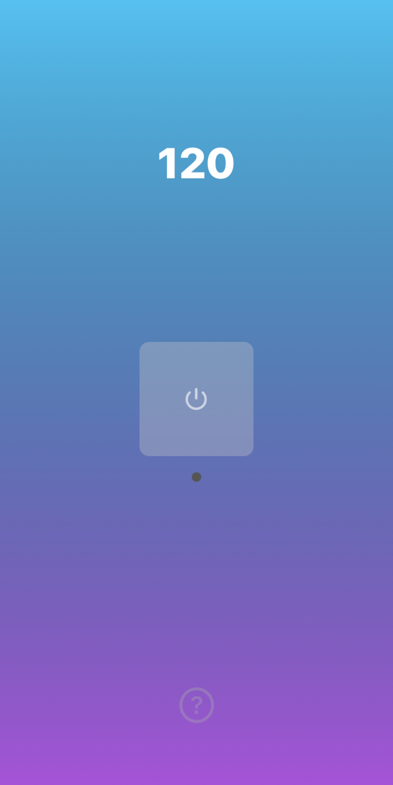
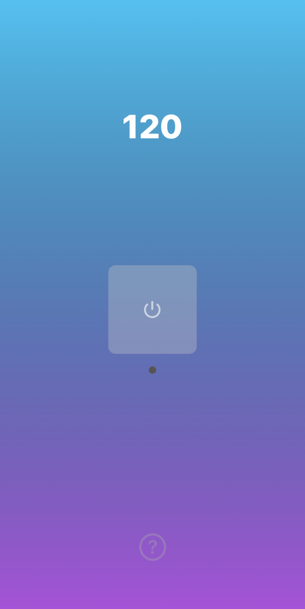
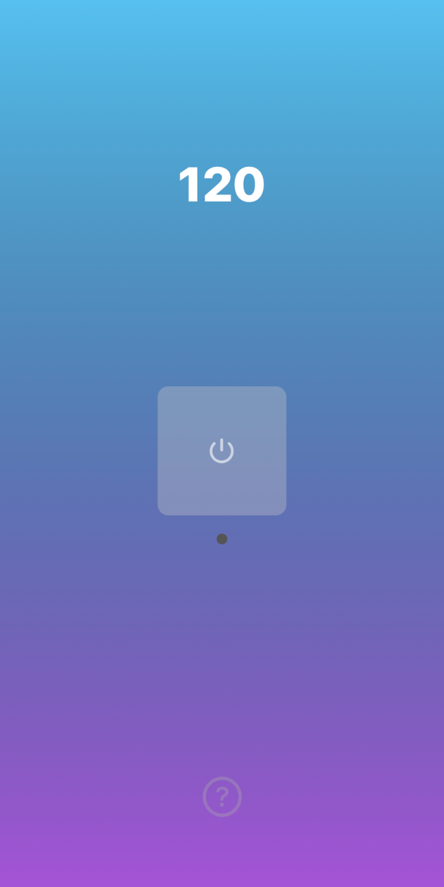

A simple app featuring a tap tempo tool and a metronome for musicians. Supports dark mode.
This is the second app I've ever created, and the first that made it onto App Store.
Built using UIKit and Storyboards, BPMeter served as a continued introduction into the world of App Development.
